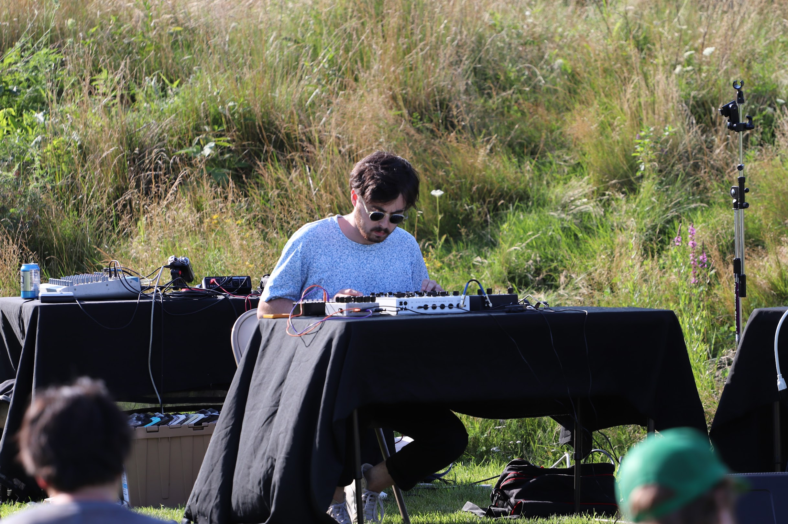

Alec Toku Whiting is a composer, improviser, multi-instrumentalist, and programmer from Yokohama, Japan, currently based in Providence, Rhode Island. He makes music on the koto, electronic instruments, and the computer. His work results from the investigation and synthesis of abstract formal processes and intuitive structures in pursuit of a multiplicitous musical event.
Alec’s music has been performed in the United States, France, Spain, Australia and Japan. He has collaborated with musicians including Mark Fell, the Mivos Quartet, Wendy Eisenberg, Lina Tullgren, Ted Reichman, Jan Williams, Rhea Burdick, and Isaac Roth Blumfield. As a performer, Alec has premiered pieces by Eva-Maria Houben, Miya Masaoka, and Anthony Coleman. In 2022, in collaboration with Lina Tullgren, Alec released Unfamiliar Ceilings, an album of improvised music for koto and violin on the label Astral Spirits. His performances have been featured on compilations by people | places | records and Ted Reichman.
Alec has recently completed studies for an MSc in Audio and Music Technology at University of York. He holds a BM in Contemporary Improvisation with a minor in Music Theory from New England Conservatory of Music, as well as a Graduate Certificate in Programming from Harvard Extension School (where he later worked as a Teaching Fellow). While at NEC, he studied composition with Stratis Minakakis and Anthony Coleman. Other teachers have included Joe Morris, Carla Kihlstedt, and Curtis Patterson.
